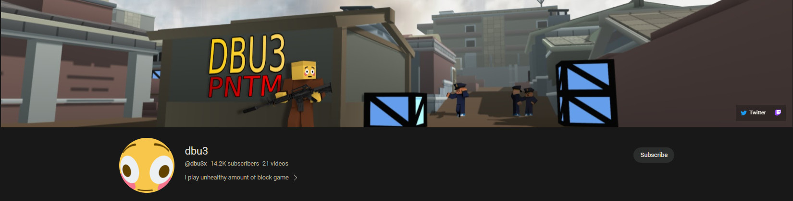
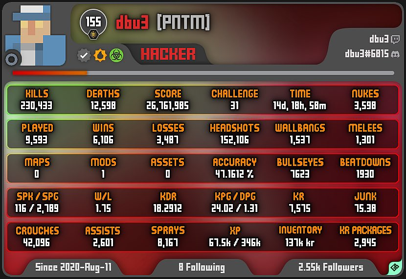

Who is dbu3?

dbu3, also known as DaBestUnit on Twitter, is a Youtuber mainly focusing on Krunker content. He is famous for his Krunker gameplay, consisting of over 26 triple nukes and 4 quad nuke chokes[II]. However, his Youtube channel also consists of Rust gameplay videos and a Roblox gameplay video (which includes his face reveal), but the latter has been deleted.
What is his cheating scandal related to?
In a video currently available on YouTube[III][note], dbu3 was caught on camera using these hacks:
- Aimbot (as in a machine does the shooting and the aiming for you)
- ESP (a hack that shows where all the other players are)
- Auto Slidehop (a Krunker-specific hack, for a machine to auto perform a parkour maneuver which makes the player move incredibly quickly)
After these clips were leaked to the public, several actions were taken against dbu3. Some of these actions included:
- The deletion and banning of his Krunker account, which consists of over 155 levels and 3500 nukes, [IV]
- The deletion of his Twitter account,
- The "death" of his YouTube channel.